Hi all,
Been a few weeks now since the last post. I've been really switching off on the weekends bar the odd #SportsVizSunday round-up which has been great for the soul, and the opportunity to get out for some good runs and gym sessions. I honestly probably feel the best I have in my whole life, physically at least. That being said... I can't believe we are reaching the end of Q1 already, so maybe time to get back to website content.
This week we will look to create a few examples of different ways to highlight a table in Tableau! Yes you heard right, b2b tutorials on this website with content vaguely useful for work related activities and not just how to build whizzy chord charts. As always the resources can be found using the icon navigation under the title.
Before we start, here are a few of my favourite table designs on Tableau to date.
Autumn Battani - Manufacturer Table - A stunning way of 'pinning' a choice from the table to the top of the visual.
phData - KPI Dashboard for Executives - Love the different chart types, the sort navigation as well as the see more detail ability. Also a nice way of having pagination at the bottom of the viz! Side note but how cool is the pop out navigations that reset the remaining views.
Samuel Parsons - State Sales - Simple, clean and a great way of visualising different metrics. Had to include this one as its inspired at least 5 more visuals since then across the community!
Luke Stanke - Table with Map Layers- Wanted to include this as an example of how you can really take your design to the next level introducing more layers.
Anyway onto todays far less glamorous content. How to create a simple highlight table.
Lets start simple
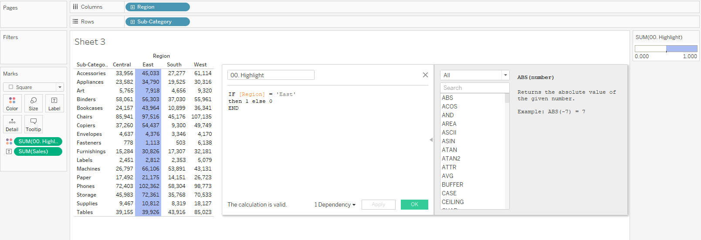
We can highlight column by creating a calculation that takes into account the specific column, and using a highlight diverging colour between 0 and 1.
Of course, we can update this to also look at rows, like in the above example looking at both Binders or East.
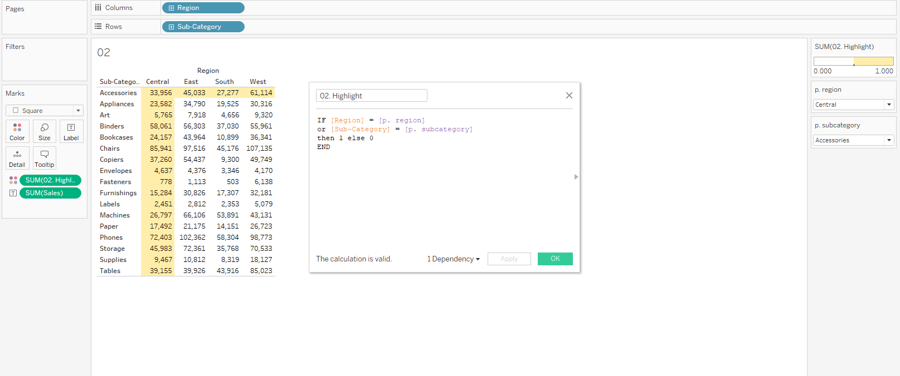
Then next logical solution is to have these colourings based on parameters - see how p. subcategory and p. region now drive the colour scale.
So far nothing hugely ground breaking. But what happens when we want to look at something other than text tables?
Well of course we will need to create 'fake' placeholders for each of the respective metrics.
Let's keep our subcategory on rows but now look at profit and sales and quantity as bars.
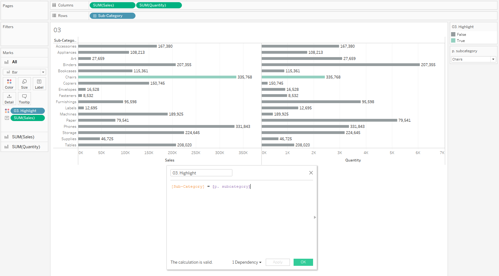
So adding the values to the columns and making the marks as bars now makes the bar the colour of our highlight instead of the row in the background.
What can we do to bring back our functionality of highlighting the background of the row?
Well lets just take sales as the example for now.
Let's remove the colouring from the pill on our sales, and bring in a new field to columns of 1.0 (Fix the axis between 0 and a value less than 1.0)
Dual axis these, no need to synchronise - of course.
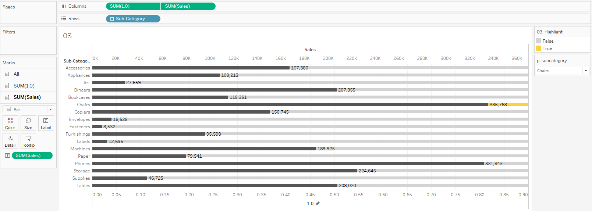
By expanding the bar in the background and adding a border we can create the effect of row dividers
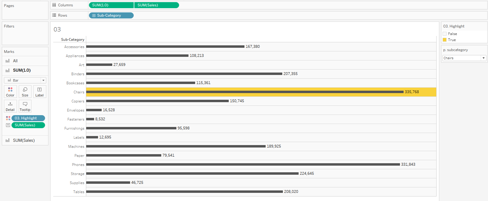
Changing the parameter now updates the chosen highlighted row
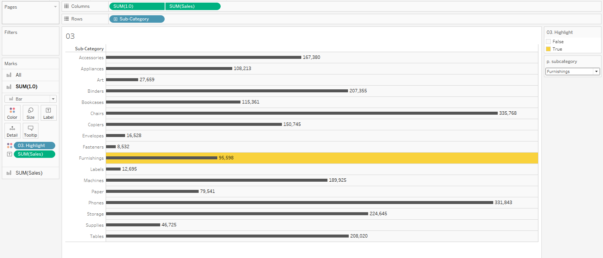
We can still take this further though, as it doesn't allow for the subcategory name to be highlighted at the moment.
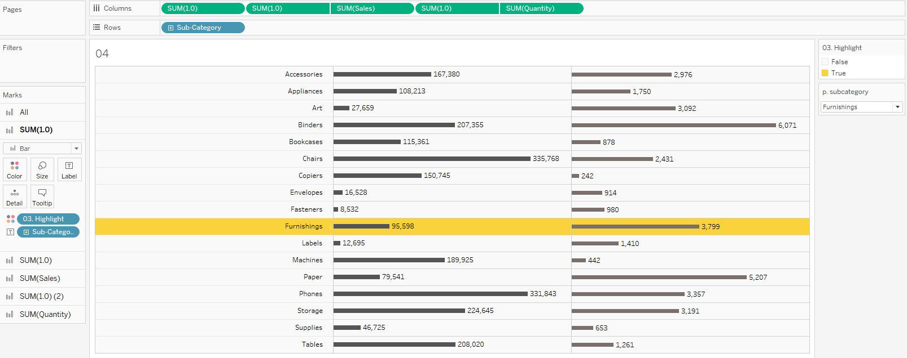
By adding a fake placeholder pill to columns we can add just a label to represent the subcategory in this case.
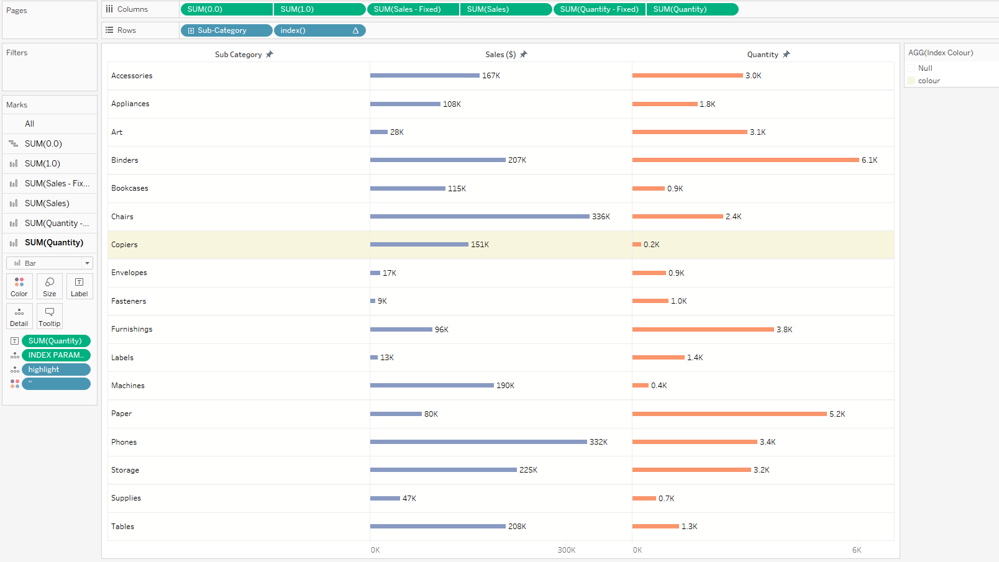
The final things we can do are:
Replace the 0.1 highlight bar actually with a fixed maximum bar to allow us to leave in an axis at the bottom if we wanted.
We can edit our axis marks at the top to just show title headers
We can add an action to our dashboard that changes our parameter based on the click to highlight the specific row.
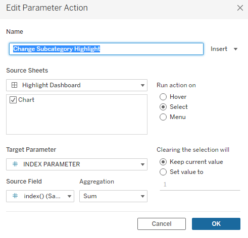
Finally, we don't just have to use a parameter to colour or tables. We can control them using sets too.
Check out my alternative method which allows the user to highlight multiple rows using a set action. You can find the workbook here.
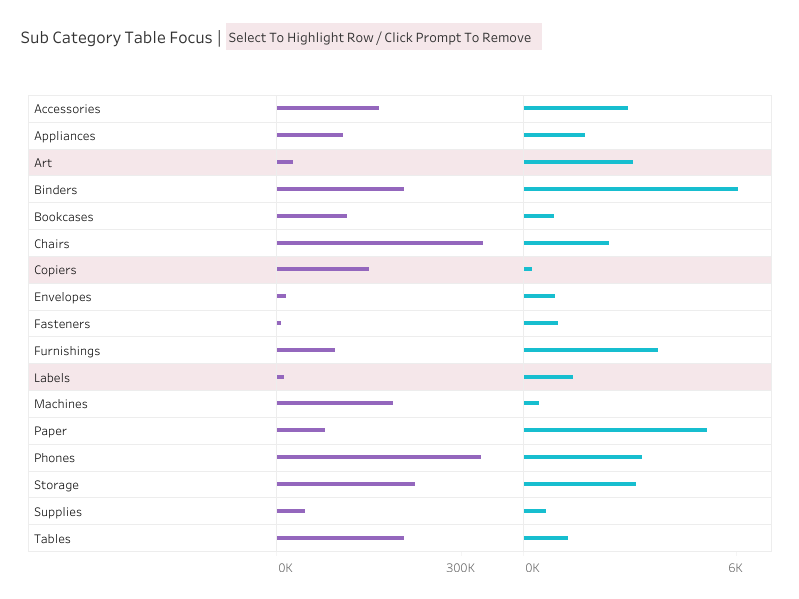
Going further:
Create the select action to click once to highlight, click again to unhighlight as oppose to using a menu feature.
Create a view with multiple views that can colour depending on a column or a row highlight
Create a highlight row and column matrix that has the specific value that is both row and column as a darker shade than the rest of the row and column.
That's it for this week. Catch you all soon.
LOGGING OFF,CJ
 Of course, we can update this to also look at rows, like in the above example looking at both Binders or East.
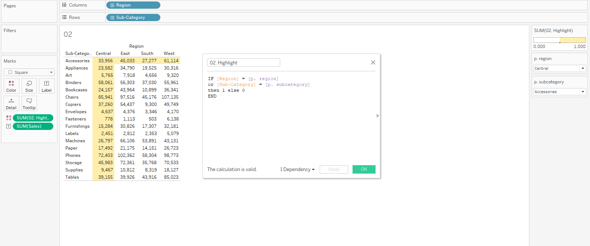
Then next logical solution is to have these colourings based on parameters - see how p. subcategory and p. region now drive the colour scale.
So far nothing hugely ground breaking. But what happens when we want to look at something other than text tables?
Well of course we will need to create 'fake' placeholders for each of the respective metrics.
Let's keep our subcategory on rows but now look at profit and sales and quantity as bars.
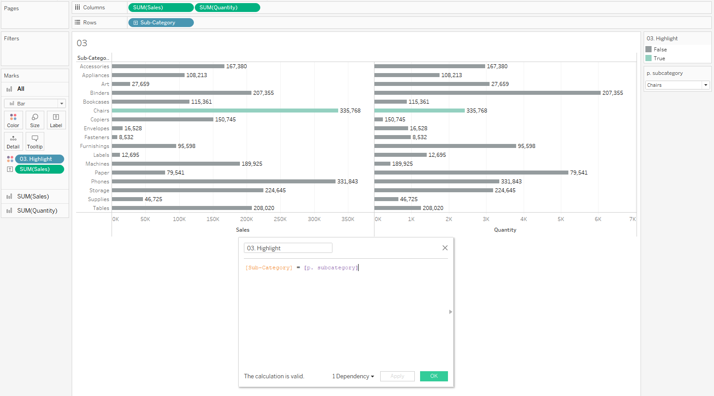
So adding the values to the columns and making the marks as bars now makes the bar the colour of our highlight instead of the row in the background.
What can we do to bring back our functionality of highlighting the background of the row?
Well lets just take sales as the example for now.
Let's remove the colouring from the pill on our sales, and bring in a new field to columns of 1.0 (Fix the axis between 0 and a value less than 1.0)
Dual axis these, no need to synchronise - of course.
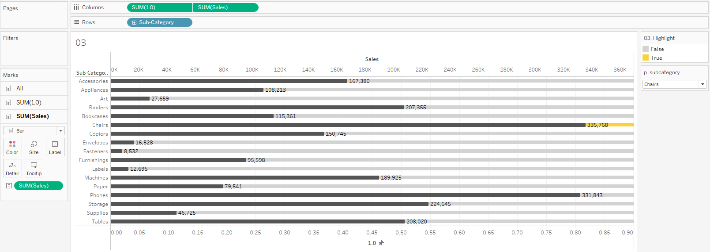
By expanding the bar in the background and adding a border we can create the effect of row dividers
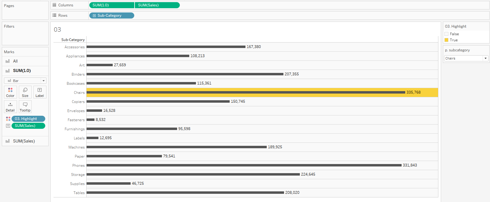
Changing the parameter now updates the chosen highlighted row
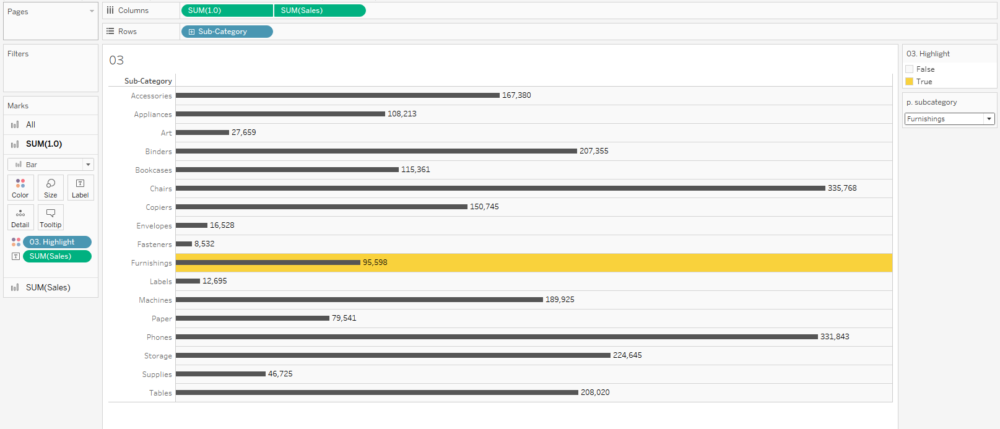
We can still take this further though, as it doesn't allow for the subcategory name to be highlighted at the moment.
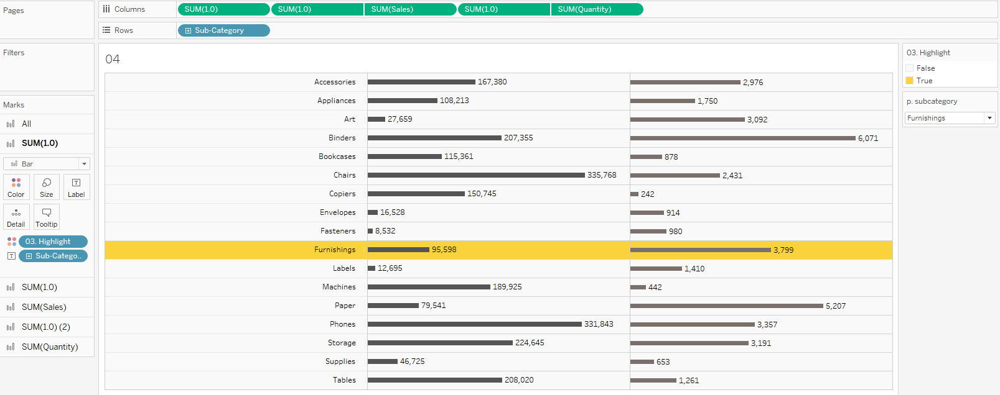
By adding a fake placeholder pill to columns we can add just a label to represent the subcategory in this case.
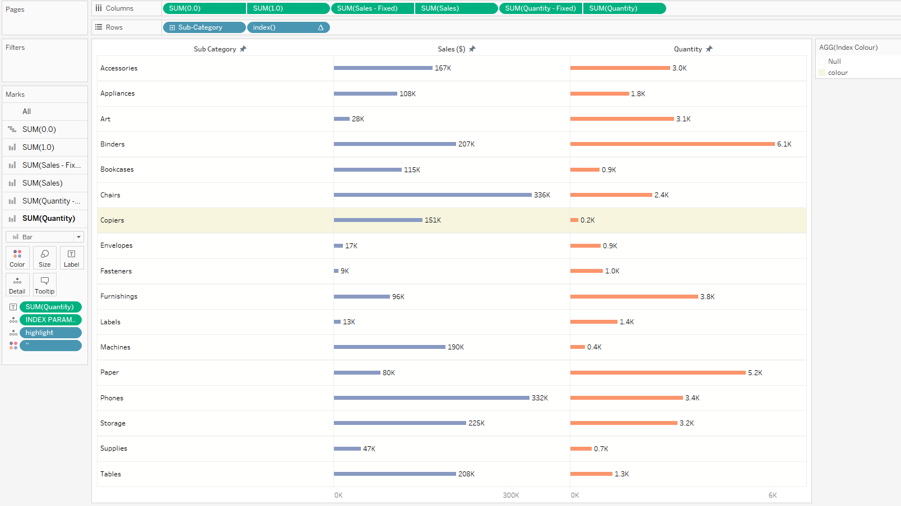
The final things we can do are:
Of course, we can update this to also look at rows, like in the above example looking at both Binders or East.
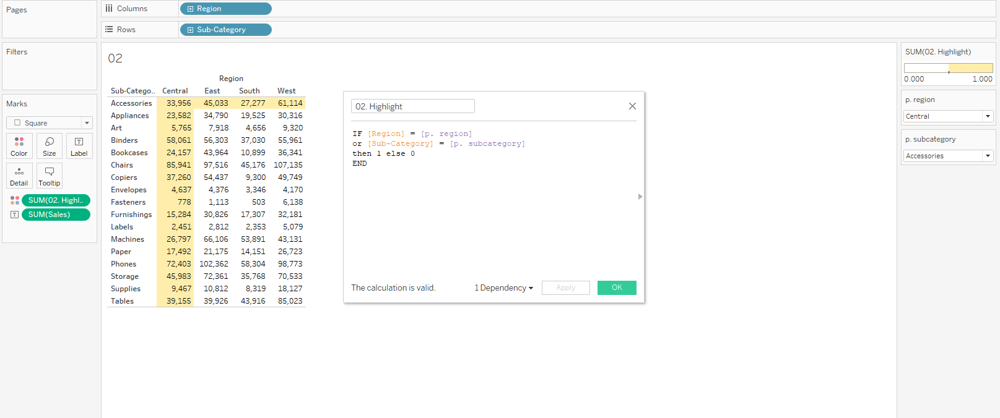
Then next logical solution is to have these colourings based on parameters - see how p. subcategory and p. region now drive the colour scale.
So far nothing hugely ground breaking. But what happens when we want to look at something other than text tables?
Well of course we will need to create 'fake' placeholders for each of the respective metrics.
Let's keep our subcategory on rows but now look at profit and sales and quantity as bars.
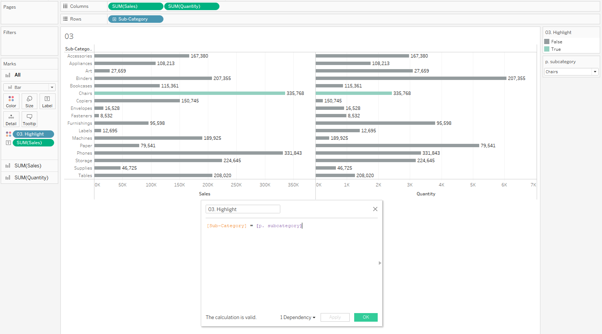
So adding the values to the columns and making the marks as bars now makes the bar the colour of our highlight instead of the row in the background.
What can we do to bring back our functionality of highlighting the background of the row?
Well lets just take sales as the example for now.
Let's remove the colouring from the pill on our sales, and bring in a new field to columns of 1.0 (Fix the axis between 0 and a value less than 1.0)
Dual axis these, no need to synchronise - of course.
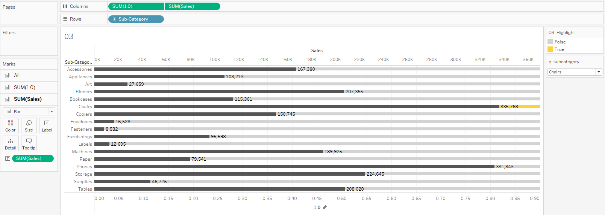
By expanding the bar in the background and adding a border we can create the effect of row dividers
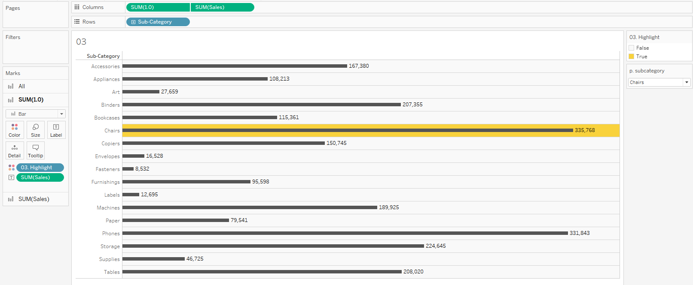
Changing the parameter now updates the chosen highlighted row
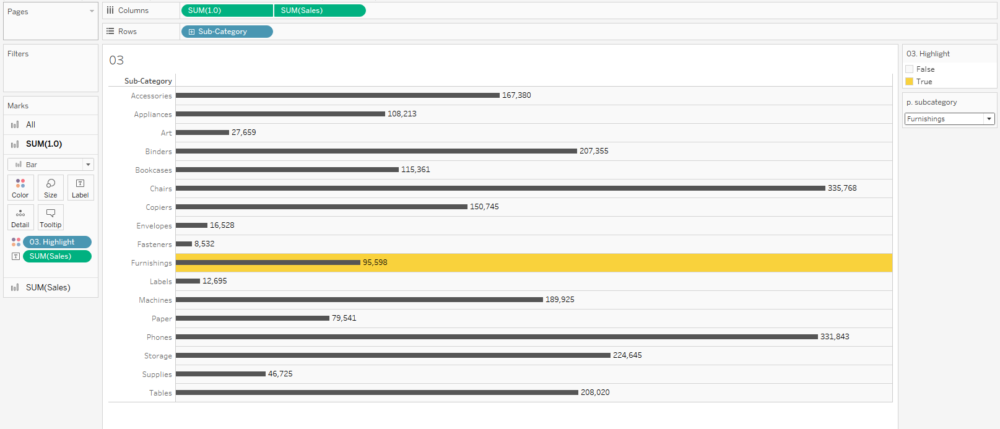
We can still take this further though, as it doesn't allow for the subcategory name to be highlighted at the moment.
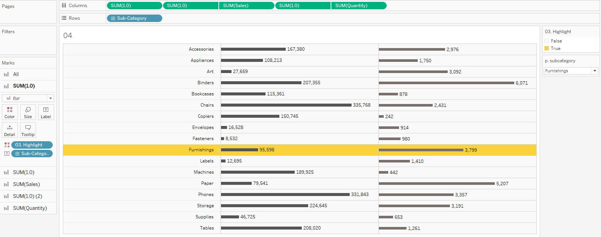
By adding a fake placeholder pill to columns we can add just a label to represent the subcategory in this case.
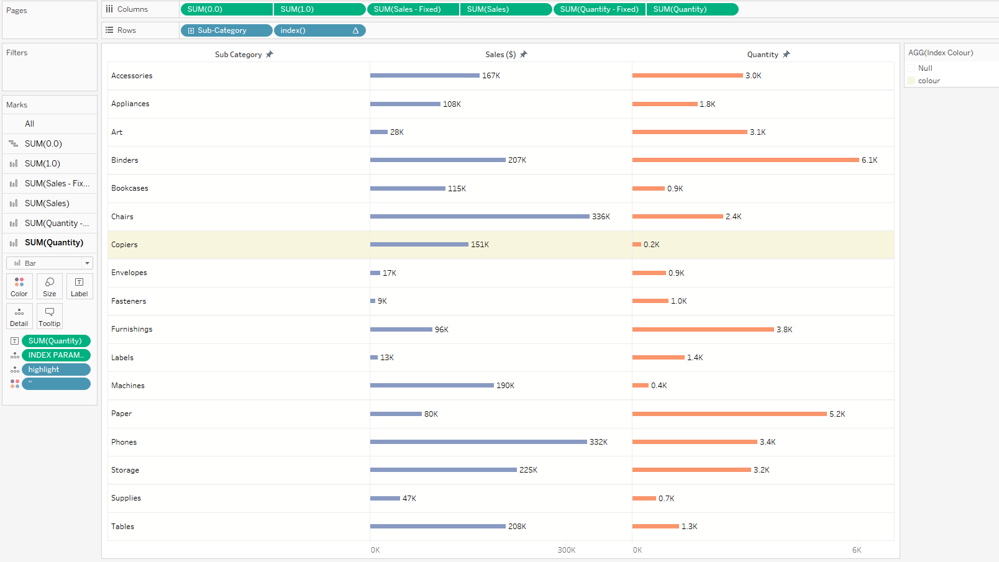
The final things we can do are: